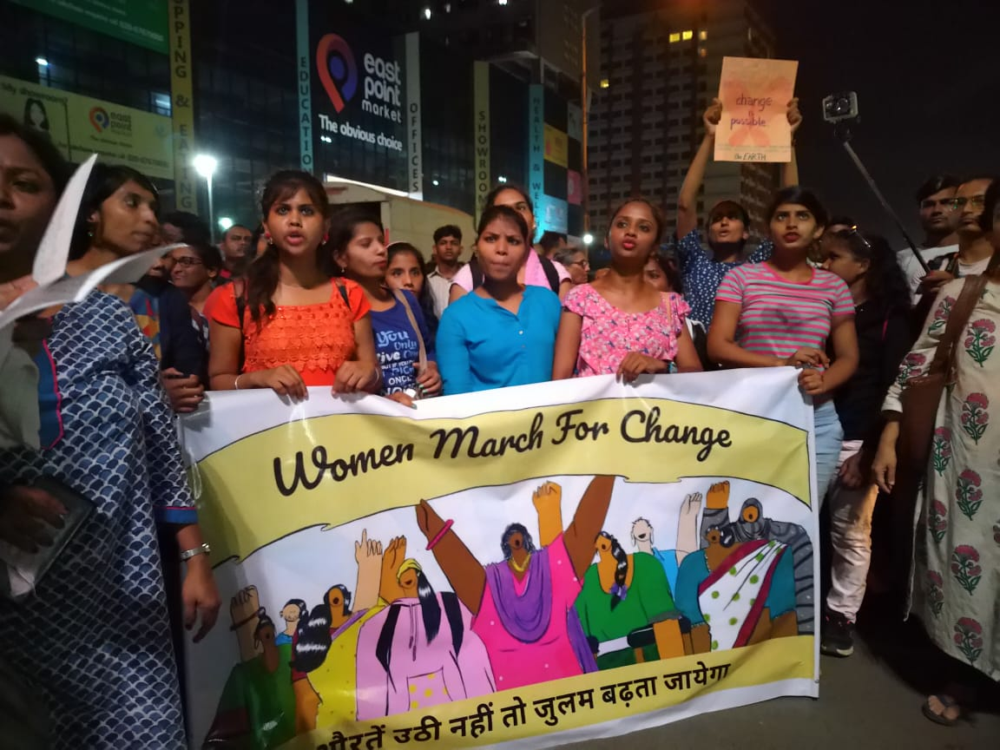
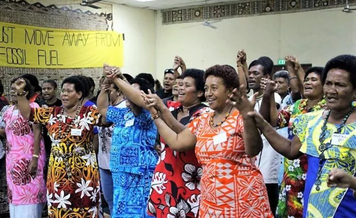
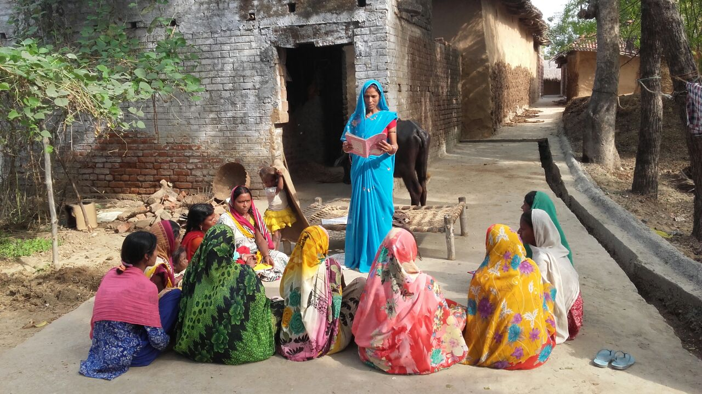
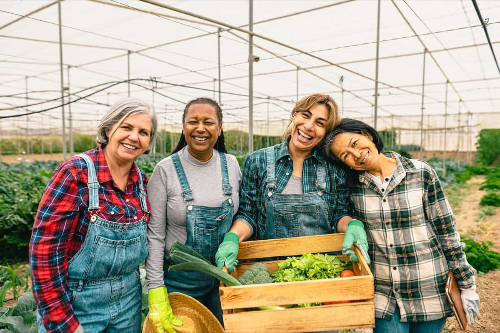
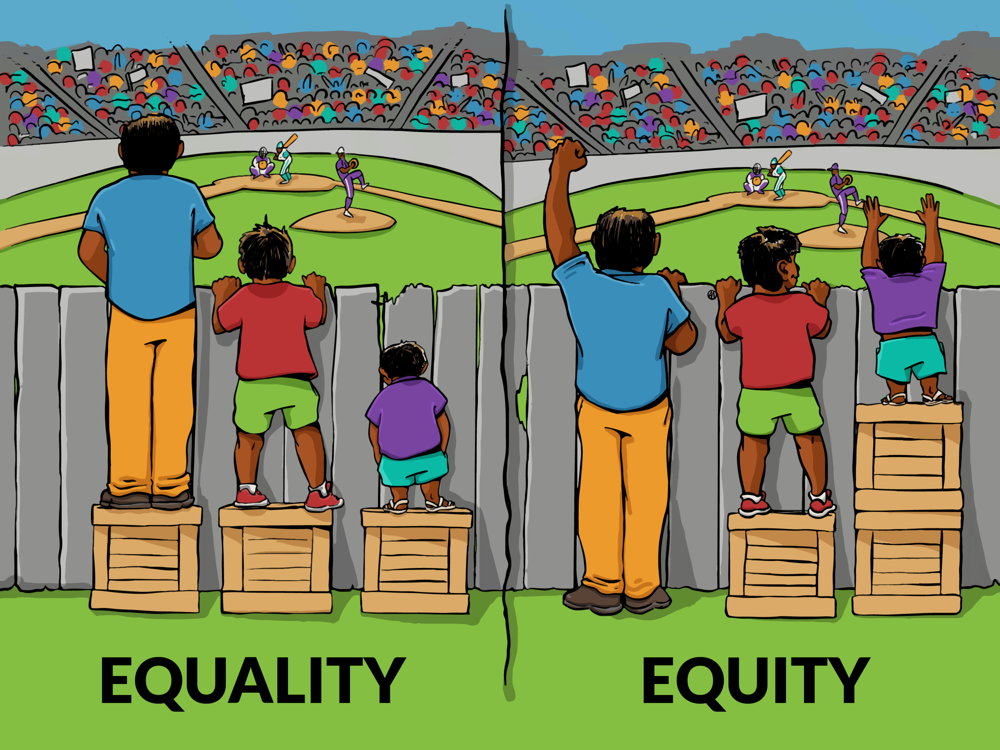
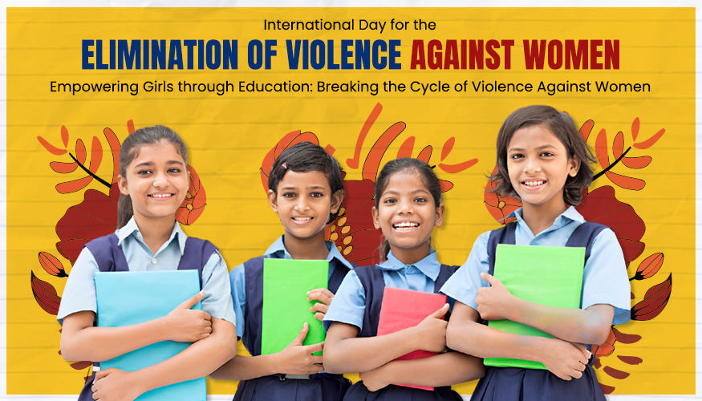
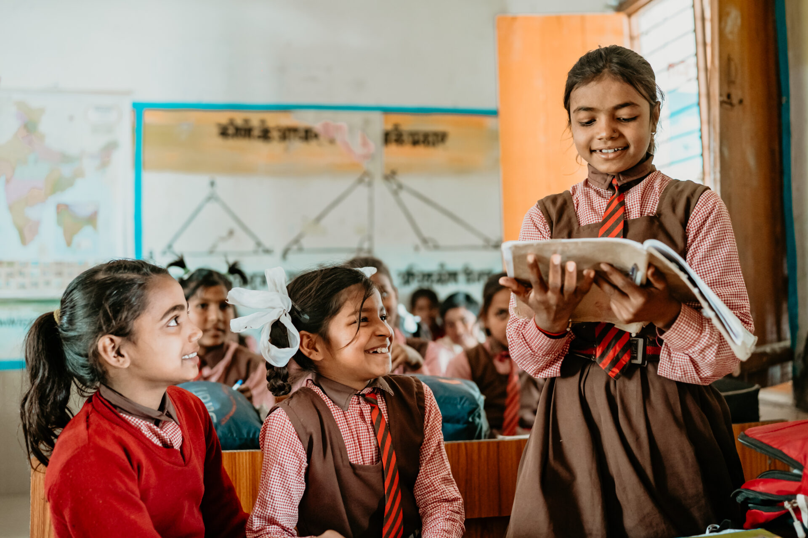

Strong women build stronger communities. Explore how empowering women transforms families, societies, and the future.
Women empowerment means giving every girl and woman equal rights, opportunities, safety, and respect in every area of life. It includes education, health, leadership, fair work, and freedom to make decisions. When women are empowered, families are healthier, economies grow faster, and entire societies become more just and peaceful.
49%Women in the global workforce
1 in 3Women face violence in their lifetime
28%Females in managerial positions worldwide
Scroll or click a card below to jump directly to topics like challenges, solutions, actions, media, feedback, and quiz.
Key Challenges
Gender discrimination in education, employment, and pay.
Early and forced marriages limiting girls’ choices and futures.
Violence, harassment, and unsafe public and online spaces.
Unequal share of unpaid care work at home.
Lack of representation in leadership and decision-making roles.
Empowerment Steps
Ensure equal access to quality education for girls and women.
Create safe workplaces with strong anti‑harassment policies.
Support women’s entrepreneurship and equal pay for equal work.
Promote women in leadership, politics, and community roles.
Strengthen laws and enforcement against gender‑based violence.
How You Can Help
Call out sexist jokes, comments, and stereotypes when you hear them.
Share responsibilities at home so girls and women get equal study or rest time.
Mentor or encourage girls in STEM, leadership, and sports.
Support women‑led businesses and local women’s groups.
Use social media to spread positive stories and campaigns about women.
Global Progress Stories
Countries with more women in parliament pass stronger family and social policies.
Self‑help groups and microfinance help rural women start successful businesses.
Scholarship programs enable first‑generation girls to complete higher education.
Corporate diversity programs increase women in senior leadership roles.
Grassroots campaigns reduce child marriage and promote girls’ education.
Everyday Equality Habits
Listen respectfully to women’s opinions and give them space to speak.
Share household chores and care work fairly with all family members.
Use inclusive language and avoid gender stereotypes.
Encourage girls to take leadership roles in school and community.
Stand beside someone facing bullying, harassment, or unfair treatment.
Tech & Innovation for Women
Online learning platforms opening new skills and careers to women.
Mobile banking and digital payments supporting women entrepreneurs.
Safety apps and helplines providing help in emergencies.
Social media giving women a voice and global audience.
Data and AI used to track gender gaps and design better policies.
🎬 Awareness Video
Watch this short awareness video to understand how empowering women changes families, workplaces, and communities.
Use it in classrooms, campaigns, or community events to spark meaningful conversations about equality.
📸 Empowerment Gallery

Community women’s rights campaign

Women facing crisis and standing strong

Women leading change in their community

Women farmers and cooperativesWomen organizing community clean‑up

Simple tips for everyday equality

School event on women’s rights

Educated girls, empowered future
Real World Success Stories
Across the world, countries and communities are investing in girls’ education, women’s safety, and economic independence.
These successes show how empowering women strengthens entire societies and creates a fairer future for everyone.
+50%
Higher family income when women work and earn fairly
2×
Children more likely to stay in school when mothers are educated
35%
Higher business returns in firms with diverse leadership
30%
Drop in violence where strong women’s support services exist
SDG 5
UN Sustainable Development Goal focused on gender equality
Test Your Knowledge — Empowerment Quiz
Points: 0
Streak: 0
Leaderboard — Top Scores
Top 3 scores stored locally.
Answer explanation
💬 Share Your Thoughts
Tell how this women empowerment hub inspired you or share ideas to make homes, schools, and workplaces more equal and safe for women.
Why your voice matters
Helps improve awareness content for students and communities.
Inspires new ideas for campaigns that support girls and women.
Shows what topics about equality you want to learn next.
Your story = someone’s courage
Even one small action or story about supporting women can give courage to others to stand up, speak out, and create change.